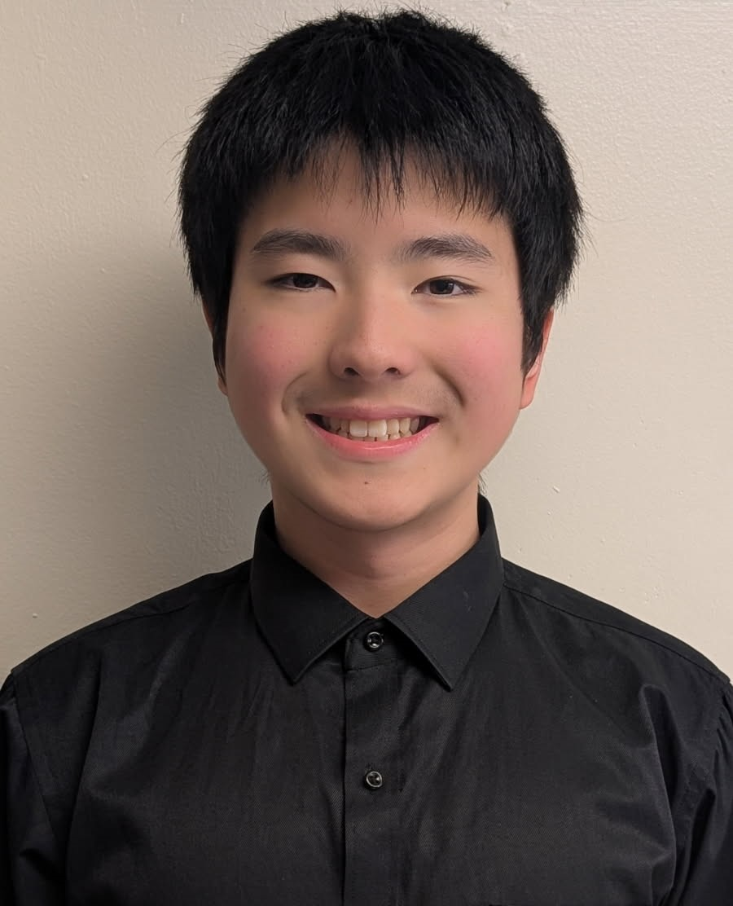

Lead Instructor
Lucas Chen
Lucas Chen is a 10th-grade Engineering Magnet student at Eastern Technical High School and a NASA and MESA award-winning student engineer, programmer, and innovator. With more than seven years of programming experience, Lucas has developed and published over 30 independent software projects and has taught Scratch programming to younger students since 2022.
As captain of Team Galaxy, Lucas led a six-person team to 3rd place nationwide in the 2025-2026 NASA Dream With Us Design Challenge, helping make Team Galaxy the first Maryland team to earn a national podium placement in the competition. His team designed an AI-powered unmanned aerial system for precision agriculture, focused on identifying pest damage in soybeans and supporting more efficient crop protection.
Lucas has also applied programming and engineering to community-focused innovation through JHU/APL MESA, where he helped design an autonomous machine to collect trash from bodies of water using infrared sensing and Python programming.
Through the TG Academy of Innovation, Lucas hopes to help students learn the same process behind these projects: identifying meaningful problems, researching real-world needs, developing practical solutions, building strong presentations, and preparing for STEM competitions, research, entrepreneurship, and leadership opportunities.
Achievements
- National 3rd Place, 2025-2026 NASA Dream With Us Design Challenge
- Captain of the 1st Maryland team to podium in NASA DwU history
- Travel Grant Awardee and Poster Presenter, AASF AIX Summit
- 1st Place Regionals and 2nd Place Finals, JHU/APL MESA
- USCAC 1st Prize Innovation Awardee, 2026
- 4x President's Volunteer Service Award - Gold
- Archery state champion 8x; 4th place Nationals 2023